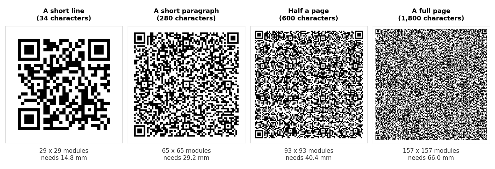

Most QR codes are instructions. A link tells the phone to open a browser, a WiFi code tells it to join a network, a vCard tells it to offer a new contact. A plain text code is different. It carries words and nothing else, so the scanner has nowhere to send them. It simply displays them.
That is the whole feature, and it is genuinely useful for a serial number on a machine, a short instruction on a piece of equipment, or a note that has to be readable without an internet connection. It is also where people get into trouble, because text has no natural length limit the way a URL does, and every character you add makes the printed code harder to scan.
What a text QR code actually does
The code contains your characters exactly as you typed them. There is no prefix, no format, no wrapper. Scan a text code that says Filter changed 04/09/2026 - next due 04/03/2027 and that string is what comes back.
What happens next is up to the app doing the scanning, and this is worth knowing before you print anything. A scanner that recognises a link can offer to open it. Given plain text there is nothing to open, so most scanners fall back to showing the text with a copy or share button. Some phone cameras are less helpful with plain text than they are with links, and may show a smaller prompt or none at all.
Test with the camera app, not just a scanner app. A dedicated scanner will always show you plain text. The built in camera on a phone is tuned for links and may handle text more quietly. If your audience will be using their camera, check on a camera before you commit to print.
How to make one
- Open our text QR code generator and type the message.
- Check the length against the size you intend to print, using the table below.
- Download the PNG for screens, or an SVG from the customiser if it is going to a printer.
- Scan it with a phone and read the result back before you print anything.
That last step catches nearly everything: a typo, a line break you did not mean to include, an accented character that did not survive. It takes ten seconds.
What we measured: length against print size
We encoded ordinary English prose at increasing lengths at error correction level M, recorded the grid each one produced, and decoded every code back to confirm it matched the input. The print size is the smallest usable width, from the 0.4 mm per module floor plus the quiet zone the format requires.

| What you are encoding | Characters | Grid | Smallest usable print |
|---|---|---|---|
| A single word | 7 | 21 x 21 | 11.6 mm |
| A short line, such as a table number | 34 | 29 x 29 | 14.8 mm |
| A network name and password written out | 48 | 33 x 33 | 16.4 mm |
| A sentence or two | 140 | 49 x 49 | 22.8 mm |
| A short paragraph | 280 | 65 x 65 | 29.2 mm |
| Half a page | 600 | 93 x 93 | 40.4 mm |
| A full page | 1,800 | 157 x 157 | 66.0 mm |
| The most level M will hold | 2,331 | 177 x 177 | 74.0 mm |
All eight decoded correctly when we scanned them back, including the 2,331 character one. Fitting is not the problem. The problem is the print size those larger codes demand, and the fact that the floor in the last column is a floor rather than a recommendation.
A 66 mm code is bigger than a beer mat. If you were imagining a full page of text on a small equipment label, the numbers say no long before the format does.
The ceiling, and what happens when you hit it
A QR code stops at version 40, a 177 by 177 grid. At error correction level M that holds 2,331 bytes. We tried 2,332 and the generator refused outright with a length overflow rather than producing a code that might have failed quietly later. That is the correct behaviour, and it is worth knowing that a generator which silently truncates your text instead would be a much worse tool.
The limit varies by error correction level, because correction data takes room that would otherwise hold your text:
| Error correction | Maximum characters | Grid at that size | Smallest usable print |
|---|---|---|---|
| L | 2,953 | 177 x 177 | 74.0 mm |
| M | 2,331 | 177 x 177 | 74.0 mm |
| Q | 1,663 | 177 x 177 | 74.0 mm |
| H | 1,273 | 177 x 177 | 74.0 mm |
Note that the grid is identical in every row. At the ceiling you are always printing 177 by 177 modules. Choosing level L over level H does not buy you a smaller code there, it buys you more than twice the text in the same physical square, at the cost of damage tolerance. We put numbers on that tradeoff in our damage test.
Error correction costs you length
Below the ceiling the effect runs the other way. Here is the same 280 character paragraph at all four levels:
| Level | Grid | Smallest usable print | Against level L |
|---|---|---|---|
| L | 61 x 61 | 27.6 mm | — |
| M | 65 x 65 | 29.2 mm | +1.6 mm |
| Q | 77 x 77 | 34.0 mm | +6.4 mm |
| H | 85 x 85 | 37.2 mm | +9.6 mm |
Going from L to H on the same text adds almost 10 mm to the smallest size you can print. That is a real cost on a label or a card, and it is why M is the sensible default for a text code: enough tolerance for a printed surface, without inflating a paragraph into something the size of a coaster.
Level H earns its place when the code will be handled, scuffed or partly obscured, or when you are putting a logo in the middle. For a laminated note on a wall, M is fine.
Accents, emoji and other non-English characters
A QR code stores bytes, and how those bytes map back to characters depends on the encoding the generator chose. Get it wrong and Café comes back as Café, or as nothing at all.
Our generator encodes as UTF-8, which is what modern scanners expect, and we verify it by decoding the output and comparing it to the input character by character. We test with accented Latin text, Spanish names and Japanese, because those are the three cases that break naive implementations in different ways.
Emoji are the same problem in a more visible form. One emoji is four bytes, and older tools that default to a single byte encoding turn it into a stray control character rather than failing outright, so the code still generates and still scans. It just comes back wrong.
Two practical consequences. Non-English characters take more than one byte each, so a paragraph of Japanese fills a code faster than the same paragraph of English. And if you are pasting text from a word processor, watch for curly quotes and long dashes, which are also multi-byte characters and are easy to paste in without noticing.
Scan the code and compare the text. Not glance at it, compare it. Encoding faults usually show up in exactly one character somewhere in the middle, which is the easiest thing in the world to miss on a quick look.
When text is the right choice, and when it is not
Text is the right choice when the information is short, will not change, and has to work without a network. A serial number on a pump, a rack location in a warehouse, a service date on an air conditioning unit, a short instruction on a machine. Nobody needs a website for those, and a code that works in a basement with no signal is worth something.
Text is the wrong choice in three cases, and in each one another format does the job better:
| If you are writing | Use instead | Why |
|---|---|---|
| A web address as plain text | URL generator | A proper link is offered as a tap rather than shown as words to retype |
| A network name and password | WiFi generator | Joins the network on scan instead of making guests type it |
| Contact details | vCard generator | Offers to save a contact rather than showing a block of text |
| More than a short paragraph | A link to a page | 25 characters print at 13 mm. 600 characters need 40 mm and far finer modules |
That last row is the one that catches people out. If you find yourself pasting several paragraphs into a text generator, what you actually want is a page with that text on it and a link to the page. The code shrinks from 93 by 93 to around 29 by 29, and you can fix a typo afterwards, which you can never do with a printed text code.
Common questions
Does a text QR code need the internet?
No. The text is inside the code. That is its main advantage over a link and the reason it suits equipment labels, basements, aircraft and anywhere else a signal is unreliable.
Can I edit the text later?
No. A text code is static, with nothing behind it to change. Reprinting is the only edit. If the wording might change, point a link at a page you control instead and see our guide to static and dynamic codes.
How many characters can a QR code hold?
2,331 at error correction level M, 2,953 at level L, 1,663 at Q and 1,273 at H. Those are ceilings, not targets. At any of them you are printing a 177 by 177 grid, which needs 74 mm before it is comfortably scannable.
Why did my long text code stop scanning?
Almost always because it was printed too small for its density. A 157 by 157 code printed at 25 mm gives each module 0.16 mm, well under the 0.4 mm floor, so the camera cannot resolve them. Either print it larger or shorten the text. We measured where scanning breaks down in why won't this QR code scan.
Are line breaks allowed?
Yes, and they are preserved. They also count as characters, so a list with many short lines costs more than the visible text suggests.
Is the text private?
No. Anyone who scans the code reads it, and anyone with a photo of the code can decode it later. Never put a password, a door code or anything confidential in a text QR code on public display.
What size should I print it?
Take the floor from the table above and add margin for how it will be scanned. A label people hold at arm's length is fine near the floor. Anything read from a distance needs to grow roughly in proportion. Our sign maker handles the standard sizes, and the sign size guide explains the reasoning.